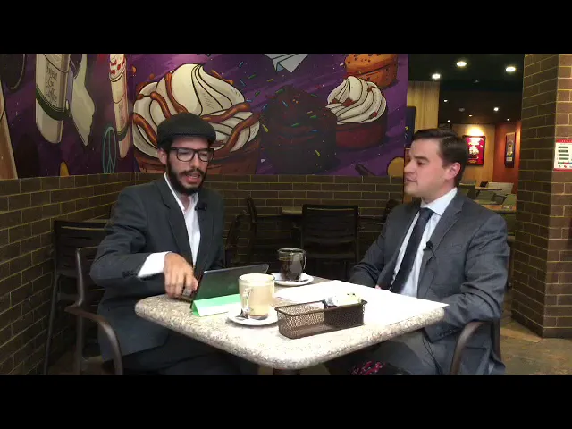
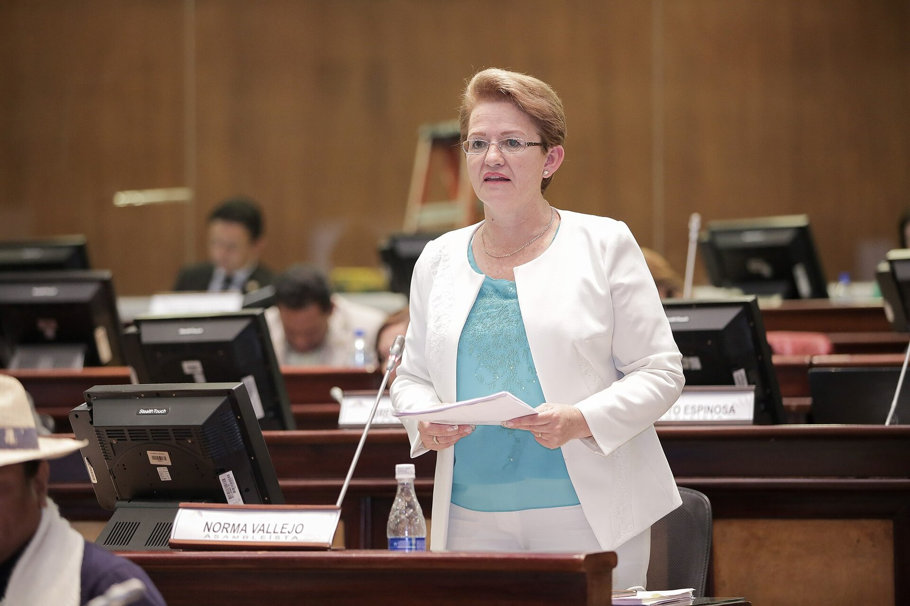
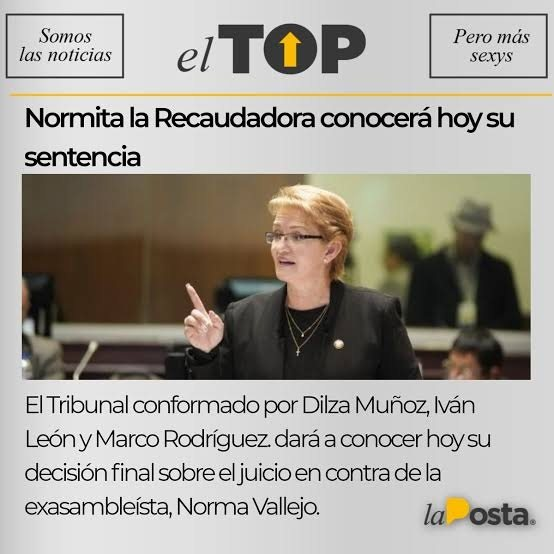
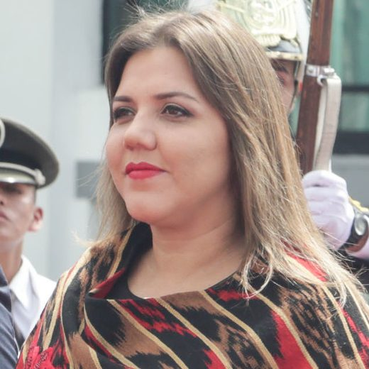

Oct 9, 2018 · Eduardo León, the advisers' lawyer
A three-hour audio recording. Alianza País assembly member Norma Vallejo explains to her staff how it works: the job is political, the salary isn't yours, you contribute ten percent in cash, and that's how it's done in every office. La Posta published it on October 5, 2018. Four days later there was a complaint at the Attorney General's Office; five weeks later, a removal from office; two years later, a conviction. The first tithe collector to fall in a National Assembly that collected tithes.


An Ecuadorian assembly member has a team of advisers and assistants paid by the state. The tithe meant that team handed part of their salaries back to the legislator or the party to keep their jobs. Everyone in the National Assembly knew it and no one proved it: the Assembly president, Elizabeth Cabezas, called it a hallway rumor. On September 4, 2018, Pablo Santillán, an adviser to CREO assembly member Fabricio Villamar, announced he was compiling cases of advisers who reported that cuts were being taken from their salaries. One of the first to speak on La Posta's interview show was former adviser Andrea Utreras, who took on the world so that people would stop calling it a rumor and start calling it a national disgrace.

On October 5, 2018, La Posta published excerpts of the audio. In a conversation of nearly three hours with her staff, Norma Vallejo Jaramillo, an Alianza País assembly member for Pichincha and a member of the Workers' Rights Committee, explains how it works: the job is political, a post, it's not as if the salary is yours; ten percent of the salary is contributed to the movement; it is collected in cash; that's how it's done in every office. Former advisers said it started at 150 dollars, then 250, then 300, and kept rising: in some cases the cut reached half the salary. Someone from Alianza País would come by the office to settle accounts with the team, according to the complaint. And there were extras: plane tickets abroad, wedding expenses, whatever was needed. A human credit card, it was said in the interview with lawyer Eduardo León, who summed it up this way: covering the personal expenses of the assembly member and her family.
This isn't about a political post. She starts from the premise that the salaries aren't yours. Whose are they, then? Hers. Alianza País's.
Eduardo León, the complainants' lawyer, on La Posta's interview show, October 9, 2018
Vallejo did not answer calls from La Posta or any other outlet. She wrote a letter to Gustavo Baroja, Alianza País secretary in Pichincha, asking to answer to the party's ethics committee, not to the National Assembly or the public; she said only that she would appear at the Attorney General's Office if a complaint was filed against her. Alianza País issued an unsigned statement that, instead of backing the advisers, complained about attacks on the movement and asked how the other parties were financed; several assembly members in the bloc told Boscán they did not know who had called for it. In the audio Vallejo mentions a certain Moisés, an operator with no official post whom she credits with getting the jobs; according to party sources, he was behind the statement. On October 9 the Attorney General's Office reopened the case and summoned Andrea Utreras, the first complainant, and lawyers Eduardo León and Felipe Rodríguez announced for that morning a formal complaint for extortion by a public official, a crime against the public administration with no statute of limitations, as well as illicit enrichment, tax fraud and perjury, on behalf of four former advisers who no longer worked for her. The payments were not voluntary, León explained: you were warned there were other people for the job. Vallejo said: I'm not a collector, look under my mattresses. No one would find anything there, the lawyer replied: everything was collected in cash.

The National Assembly had a problem: there were no grounds for removing a legislator for collecting tithes. First it unanimously approved a resolution asking the UAFE financial intelligence unit, the Comptroller General's Office and the Superintendency of Banks to review legislators' accounts and barring the firing of complainants; La Posta called it a dead letter, because everything was collected in cash. Villamar pushed a rule for removal. The legislative investigation found something else: Vallejo had brokered public jobs for at least one former adviser. On that basis, on November 13, 2018, the full Assembly removed her with 89 votes. Her alternate took the seat. It was the first fall in a scandal that reached more than twenty legislators: Ana Galarza, of CREO, was removed on February 7, 2019, with 91 votes; former vice president María Alejandra Vicuña was accused on November 27, 2018, of charging her advisers between 300 and 1,400 dollars when she was an assembly member; Karina Arteaga and Nívea Vélez were also prosecuted. The cuts ranged from 100 to 2,800 dollars a month, between 10 and 90 percent of salary. The National Assembly's approval rating fell from 30 to 14 percent.
The criminal case moved forward. The Attorney General's Office brought charges with 25 pieces of evidence and sought the maximum sentence. On July 14, 2020, a National Court of Justice panel found Vallejo guilty of extortion by a public official: she demanded monthly contributions of between 150 and 1,000 dollars from her team in exchange for keeping them in their jobs, collected about 20,305 dollars and used it to pay personal debts, office expenses, events and contributions to Alianza País. The sentence was five years; mitigating factors reduced it to one year, plus reparations and a ban on running for office. She requested a conditional suspension. On January 7, 2021, the appeal raised the sentence to two years.

On July 18, 2022, the cassation ruling, by judges Byron Guillén, Luis Rivera and Mauricio Espinoza, upheld the two years but agreed to suspend the sentence: Vallejo must live at her declared address, not leave the country without permission, report to the court every eight days, pay the reparations within six months and commit no new offenses. She did not go to prison. On March 5, 2026, in compliance with the verdict, she offered a public apology to the full National Assembly by video link, without showing her face.
The others fell too. Vicuña was sentenced on January 30, 2020, to one year for extortion by a public official, with compensation of 173,180 dollars and the forfeiture of a property. Nívea Vélez was the third convicted. The word tithe stopped being a rumor and entered the vocabulary of Ecuadorian politics. Vallejo never returned to public office.
Updated September 5, 2026
An adviser to Villamar compiles complaints of cuts taken from staffers.
The Assembly president downplays the complaints. Utreras, Villamar and Jeannine Cruz push them forward.
La Posta publishes Vallejo explaining the ten percent in cash.
Eduardo León and Felipe Rodríguez file a complaint for extortion by a public official. The Attorney General's Office summons the first complainant.
89 votes, for brokering public jobs.
The former vice president is accused of the same crime.
Removed from office with 91 votes.
One year for extortion by a public official.
One year for extortion by a public official. 20,305 dollars collected.
The sentence rises to two years.
Two years upheld, sentence suspended with conditions.
Vallejo apologizes before the full Assembly, without showing her face.
Alianza País assembly member for Pichincha. The voice on the audio.
CREO assembly member. His office gathered the first complaints and called for her removal.
Former legislative adviser. The first to denounce the tithes on La Posta.
Lawyers for the four former advisers who filed the complaint.
CREO assembly member for Tungurahua, accused over tithes.

Former vice president. She charged her advisers when she was an assembly member.
Photos via Wikimedia Commons. Ana Galarza: Fotografías:Alberto Romo/Asamblea Nacional del Ecuador (CC BY-SA 2.0); María Alejandra Vicuña: Asamblea Nacional del Ecuador from QUito, Ecuador (CC BY-SA 2.0).
She said she was not a collector, told people to look under her mattresses, and asked to answer to the Alianza País ethics committee. She offered only to go to the Attorney General's Office if a complaint was filed against her. She did not respond to La Posta.
It issued an unsigned statement complaining about attacks on the movement and asking how the other parties were financed. It later opened disciplinary proceedings.
He made no statement in the 72 hours after the audio was published.
She argued that an audio not admitted in court was used to remove Vallejo, a claim Ecuador Chequea rated as true.
lady those feet well for going around visiting protected witnesses in prison the tithes have come back to life after the publication of an audio on la posta where we hear the blood island norma vallejo of alianza país in a truly a nauseating conversation explain how collecting them works normita said and by the way normita we're waiting for you to get in touch with la posta to give your side we're waiting for you …
Read the full transcriptTranscripts from each show's automatic captions. They have not been corrected by hand: use them to find a phrase and jump to the exact minute in the video, not as verbatim quotes.
The cassation ruling suspended the sentence. Vallejo complies with conditions.
Eight years after the audio, the public apology.
La Posta published excerpts of the audio in October 2018; the complainants had the nearly three hours of recording. The video hosted on this site is the October 9, 2018, interview with the complainants' lawyer. Boscán argued at the time that political sanctions should not wait for the courts: the removal from office came twenty months before the verdict.